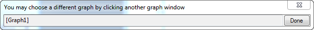

Ein Arbeitsmappenfenster verfügt im Allgemeinen über mindestens ein Blatt und kann bis zu 1024 Blätter haben.
Zusätzlich zu den Navigationsschaltflächen Zurück und Weiter verfügt die Arbeitsmappe über die Schaltfläche Blatt hinzufügen und die Schaltfläche Organizer zeigen/verbergen.
Um ein Arbeitsblatt zu verbergen:
Wenn es verborgen ist, wird das Arbeitsblatt abgeblendet im Mappenorganizer und in der Objektverwaltung angezeigt. Es wird auch nicht für den Export angezeigt.
Um ein verborgenes Arbeitsblatt zu zeigen:
Hinweis:
|
Klicken Sie mit der rechten Maustaste auf den Reiter, um die Option Einfügen oder Löschen oder Hinzufügen auszuwählen und in ein neues Blatt vor dem aktuellen Blatt einzufügen oder das aktuelle Blatt zu löschen oder ein neues Blatt als das letzte Blatt hinzuzufügen.
Klicken Sie mit der rechten Maustaste auf den Reiter, um Diagramm als Blatt hinzufügen oder Matrix als Blatt hinzufügen auszuwählen. Der Dialog zum Auswählen (wie unten) wird geöffnet. Klicken Sie auf das Fenster, das Sie als ein Blatt hinzufügen möchten, bzw. auf das Diagramm- oder das Matrixfenster, das Sie als neues Blatt zum aktuellen Arbeitsmappenfenster hinzufügen möchten.

Klicken Sie mit der rechten Maustaste auf den Reiter, um die Option Notizen als Blatt hinzufügen auszuwählen und ein Notizfenster als neues Blatt zur aktuellen Arbeitsmappe hinzuzufügen.
Ab Origin 2018b können Sie das aktuelle Blatt mit allen Informationen (einschließlich Headerzeilen und -struktur) in die Zwischenablage kopieren und es dann als neues Blatt aus der Zwischenablage in ein Arbeitsmappenfenster einfügen, indem Sie mit der rechten Maustaste auf den Reiter klicken und die Optionen Blatt kopieren und Als neues Blatt einfügen im Kontextmenü auswählen.
Wenn Sie die Option Blatt kopieren ausgewählt haben, können Sie
Klicken Sie mit der rechten Maustaste auf den Reiter. Sie können Ohne Daten duplizieren oder Duplizieren auswählen, um das aktuelle Arbeitsblatt mit Daten oder ohne Daten zu duplizieren.
Wenn Sie im Kontextmenü Ohne Daten duplizieren auswählen, wird ein Arbeitsblatt mit der gleichen Struktur und Headerzeilen, aber ohne Daten erstellt und zur aktuellen Arbeitsmappe als das letzte Arbeitsblatt hinzugefügt.
Bitte beachten Sie, dass, wenn Sie ab Version Origin 2020 die Option Ohne Daten duplizieren auswählen, um das Fenster zu duplizieren, nur die Rohdaten gelöscht werden, die Links in den Zellen aber (wie Zellenreferenzen, Zellenformel etc.) zur weiteren Verwendung erhalten bleiben. Sie können mit der Systemvariable @DkL zum älteren Verhalten zurückkehren. Dadurch werden auch die Zellenverknüpfungen gelöscht.
Wenn Sie im Kontextmenü Duplizieren wählen, wird ein neues identisches Arbeitsblatt erstellt und in das aktuelle Fenster als letztes Blatt eingefügt.
|
Zusätzlich zu den Textnotizen, die Sie zum Arbeitsblatt hinzufügen können (hier beschrieben) gibt es mehrere weitere Stellen im Origin-Projekt, an denen Sie Notizen hinzufügen können. Drei von ihnen -- Ordnernotizen, Zellnotizen und die alleinstehenden Notizfenster -- unterstützen gemischte Objekte (z. B. Text und Bilder) und komplexe Formatierung wie Origin Rich Text. |
Klicken Sie mit der rechten Maustaste auf einen Reiter und klicken Sie dann im Kontextmenü auf Name und Notizen, um den Dialog Name und Notizen zu öffnen, in dem Sie den Namen und die Kommentare des aktuellen Arbeitsblatts verwalten.

|
Wenn Sie die aktuelle Arbeitsblattauswahl aufheben müssen, klicken Sie auf die Zelle oben links vom Arbeitsblatt. Oder klicken Sie in den grauen Bereich rechts von den Arbeitsblattspalten. Beachten Sie, dass der Cursor in Form eines "schwarzen Pfeils" verwendet wird, um das gesamte Arbeitsblatt auszuwählen. |
Klicken Sie mit der rechten Maustaste auf den Reiter und wählen Sie Aus Zeichendialogen ausschließen im Kontextmenü aus, um aktuelle Blätter aus Zeichendialogen wie Diagrammeinstellungen, Layerinhalt etc. auszuschließen.
Sie können auch den LabTalk-Befehl wks.epd = 1; ausführen, um diese Operation auf das aktuell aktive Blatt auszuführen.
Außerdem können Sie diese Operation auf mehrere Blätter auf einmal durchführen, indem Sie
Wenn die Blätter markiert wurden, um sie auszuschließen, werden ihre Namen mit einer speziellen Farbe gekennzeichnet, die durch die Systemvariable @TCE gesteuert wird.
Klicken Sie mit der rechten Maustaste auf den Reiter des Blatts und wählen Sie Von Excel-Export ausschließen im Kontextmenü, um das aktuelle Blatt von dem Exportieren der gesamten Arbeitsmappe als eine Excel-Datei auszuschließen.
Klicken Sie mit der rechten Maustaste auf den Reiter und wählen Sie im Kontextmenü Navigieren. Der Dialog Arbeitsblätter navigieren kann verwendet werden, um die Arbeitsblätter in der aktuellen Arbeitsmappe zu verwalten. Weitere Einzelheiten zu diesem Dialog finden Sie auf dieser Seite.
Um das Arbeitsblatt zu vergrößern, drücken Sie die Strg-Taste und scrollen Sie dann mit der Maus, um das aktuelle Arbeitsblatt in der Arbeitsmappe zu vergrößern und zu verkleinern. Sie können auch die Symbolleiste Zoom  verwenden, um die Prozentangabe zum Vergrößern bzw. Verkleinern der Arbeitsblattspalten und -zeilen festzulegen.
verwenden, um die Prozentangabe zum Vergrößern bzw. Verkleinern der Arbeitsblattspalten und -zeilen festzulegen.
Um im Arbeitsblatt zu schwenken, klicken Sie auf die Schaltfläche Zoomen-Schwenken  . Die Schwenkoption wird aktiviert. Drücken Sie dann die linke Maustaste, um an der horizontalen Scrollleiste und/oder der vertikalen Scrollleiste zu ziehen und alle Spalten und Zeilen im aktuellen Arbeitsblatt anzuzeigen.
. Die Schwenkoption wird aktiviert. Drücken Sie dann die linke Maustaste, um an der horizontalen Scrollleiste und/oder der vertikalen Scrollleiste zu ziehen und alle Spalten und Zeilen im aktuellen Arbeitsblatt anzuzeigen.
Es kann vorkommen, wenn Sie ein frei bewegliches Diagramm im aktuellen Arbeitsblatt eingebettet haben und dieses Diagramm über den Rand des Arbeitsblattbereichs hinaus bewegt wurde, dass es dann nicht mehr vollständig angezeigt wird. Sie können Ansicht: Diagramme anordnen auswählen, um das Diagramm zurück in die Ansicht zu befördern.